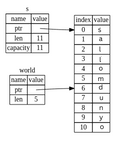

Slice turi
Slicelar butun to'plamga emas, balki to'plamdagi elementlarning qo'shni ketma-ketligiga murojaat qilish imkonini beradi. Slice bir xil referencedir, shuning uchun u ownershipga ega emas.
Bu yerda kichik dasturlash muammosi: bo'shliqlar bilan ajratilgan so'zlar qatorini oladigan va shu qatorda topilgan birinchi so'zni qaytaradigan funksiya yozing. Agar funksiya satrda bo'sh joy topmasa, butun satr bitta so'zdan iborat bo'lishi kerak, shuning uchun butun satr qaytarilishi kerak.
Keling, slicelar hal qiladigan muammoni tushunish uchun ushbu funksiyaning imzosini slicelardan foydalanmasdan qanday yozishni ko'rib chiqaylik:
fn birinchi_soz(s: &String) -> ?birinchi_soz funksiyasi parametr sifatida &String ga ega. Biz ownershiplik qilishni xohlamaymiz, shuning uchun bu yaxshi. Ammo biz nimani return qilishimiz kerak? Bizda satrning qismi haqida gapirishning metodi yo'q. Biroq, biz bo'sh joy bilan ko'rsatilgan so'z oxiri indeksini qaytarishimiz mumkin. 4-7 ro'yxatda ko'rsatilganidek, buni sinab ko'raylik.
Fayl nomi: src/main.rs
fn birinchi_soz(s: &String) -> usize { let bayt = s.as_bytes(); for (i, &item) in bayt.iter().enumerate() { if item == b' ' { return i; } } s.len() } fn main() {}
Ro'yxat 4-7: String parametriga bayt indeks qiymatini qaytaradigan birinchi_soz funksiyasi
Biz String elementini element bo'yicha ko'rib chiqishimiz va qiymat bo'sh joy yoki yo'qligini tekshirishimiz kerakligi sababli, as_bytes metodi yordamida Stringni baytlar arrayiga aylantiramiz.
fn birinchi_soz(s: &String) -> usize {
let bayt = s.as_bytes();
for (i, &item) in bayt.iter().enumerate() {
if item == b' ' {
return i;
}
}
s.len()
}
fn main() {}Keyinchalik, iter metodi yordamida baytlar arrayida iterator yaratamiz:
fn birinchi_soz(s: &String) -> usize {
let bayt = s.as_bytes();
for (i, &item) in bayt.iter().enumerate() {
if item == b' ' {
return i;
}
}
s.len()
}
fn main() {}Biz iteratorlarni 13-bobda batafsilroq muhokama qilamiz.
Hozircha bilingki, iter to‘plamdagi har bir elementni return qiladigan va enumerate iter natijasini o‘rab, har bir elementni tuplening bir qismi sifatida return qiladigan metoddir. enumerate dan qaytarilgan tuplening birinchi elementi indeks, ikkinchi element esa elementga referencedir.
Bu indeksni o'zimiz hisoblashdan ko'ra biroz qulayroqdir.
enumerate metodi tupleni qaytarganligi sababli, biz ushbu tupleni destructure qilish uchun patternlardan foydalanishimiz mumkin. Biz 6-bobda patternlarni ko'proq muhokama qilamiz. for siklida biz tupledagi indeks uchun i va bitta bayt uchun &element ga ega bo‘lgan patternni belgilaymiz.
Biz .iter().enumerate() dan elementga referenceni olganimiz uchun biz patternda & dan foydalanamiz.
for sikli ichida biz bayt literal sintaksisidan foydalanib, bo'sh joyni ifodalovchi baytni qidiramiz. Agar bo'sh joy topsak, biz pozitsiyani return qilamiz.
Aks holda, s.len() yordamida satr uzunligini qaytaramiz.
fn birinchi_soz(s: &String) -> usize {
let bayt = s.as_bytes();
for (i, &item) in bayt.iter().enumerate() {
if item == b' ' {
return i;
}
}
s.len()
}
fn main() {}Endi bizda satrdagi birinchi so'zning oxirgi indeksini aniqlashning metodi bor, ammo muammo bor. Biz usize ni o'z-o'zidan qaytarmoqdamiz, lekin bu &String kontekstida faqat meaningful raqam. Boshqacha qilib aytadigan bo'lsak, bu String dan alohida qiymat bo'lganligi sababli, uning kelajakda ham amal qilishiga kafolat yo'q. Ro'yxat 4-8da 4-7 ro'yxatdagi birinchi_soz funksiyasidan foydalanadigan dasturni ko'rib chiqing.
Fayl nomi: src/main.rs
fn birinchi_soz(s: &String) -> usize { let baytlar = s.as_bytes(); for (i, &item) in baytlar.iter().enumerate() { if item == b' ' { return i; } } s.len() } fn main() { let mut s = String::from("hello world"); let soz = birinchi_soz(&s); // soz 5 qiymatini oladi s.clear(); // bu Stringni bo'shatib, uni "" ga tenglashtiradi // soz hali ham bu erda 5 qiymatiga ega, ammo biz 5 qiymatini meaningfull ishlatishimiz // mumkin bo'lgan boshqa qator yo'q. soz endi mutlaqo yaroqsiz! }
Ro'yxat 4-8: birinchi_soz funksiyasini chaqirish natijasida olingan natijani saqlash va keyin String tarkibini o'zgartirish
Bu dastur hech qanday xatosiz kompilyatsiya qiladi va agar biz s.clear() ga murojat qilgandan keyin soz ishlatgan bo'lsak ham shunday bo'lardi. Chunki soz s holatiga umuman bog‘lanmagan, soz hali ham 5 qiymatini o‘z ichiga oladi. Birinchi so‘zni chiqarish uchun biz ushbu 5 qiymatini s o‘zgaruvchisi bilan ishlatishimiz mumkin, ammo bu xato bo‘lishi mumkin, chunki sozda 5 ni saqlaganimizdan so‘ng s tarkibi o‘zgargan.
soz da indeksning s dagi ma'lumotlar bilan muvofiqligi yo‘qolishidan xavotir olish juda zerikarli va xatoga yo‘l qo‘yishga moyil! Agar biz ikkinchi_soz funksiyasini yozsak, bu indekslarni boshqarish yanada mo'rt bo'ladi. Uning signaturesi quyidagicha ko'rinishi kerak:
fn ikkinchi_soz(s: &String) -> (usize, usize) {Endi biz boshlang'ich va tugash indeksini kuzatmoqdamiz va bizda ma'lum bir holatdagi ma'lumotlardan hisoblangan, ammo bu holatga umuman bog'liq bo'lmagan ko'proq qiymatlar mavjud. Bizda bir-biriga bog'liq bo'lmagan uchta o'zgaruvchi mavjud bo'lib, ular sinxronlashtirilishi kerak.
Yaxshiyamki, Rust bu muammoni hal qildi: string slicelar.
String Slicelar
string slice String qismiga reference boʻlib, u quyidagicha koʻrinadi:
fn main() { let s = String::from("salom duno"); let salom = &s[0..5]; let dunyo = &s[6..11]; }
Butun Stringga reference oʻrniga salom qoʻshimcha [0..5] bitida koʻrsatilgan String qismiga referencedir. Biz [starting_index..ending_index] ni belgilash orqali qavslar ichidagi diapazondan foydalangan holda slicelarni yaratamiz, bu yerda starting_index bo'limdagi birinchi pozitsiyadir va ending_index slicedagi oxirgi pozitsiyadan bittaga ko'p. Ichkarida, slice ma'lumotlar tuzilmasi ending_index minus starting_index ga mos keladigan boshlang'ich pozitsiyasini va slice uzunligini saqlaydi. Demak, let dunyo = &s[6..11]; holatida dunyo so'zi s ning 6 indeksidagi baytga ko‘rsatgichni o‘z ichiga olgan bo‘lak bo‘lib, uzunligi 5 ga teng bo‘ladi.
4-6-rasmda bu diagrammada ko'rsatilgan.

4-6-rasm: Stringning bir qismiga referal qiluvchi String slice
Rustning .. diapazoni sintaksisi bilan, agar siz 0 indeksidan boshlamoqchi bo'lsangiz, qiymatni ikki davr oldidan tushirishingiz mumkin. Boshqacha qilib aytganda, ular tengdir:
#![allow(unused)] fn main() { let s = String::from("salom"); let slice = &s[0..2]; let slice = &s[..2]; }
Xuddi shu qoidaga ko'ra, agar sizning slicesingiz String ning oxirgi baytini o'z ichiga olgan bo'lsa, siz keyingi raqamni qo'yishingiz mumkin. Bu shuni anglatadiki, ular tengdir:
#![allow(unused)] fn main() { let s = String::from("salom"); let uzunlik = s.len(); let slice = &s[3..uzunlik]; let slice = &s[3..]; }
Shuningdek, butun satrning bir qismini olish uchun ikkala qiymatni ham tashlab qo'yishingiz mumkin. Shunday qilib, ular teng:
#![allow(unused)] fn main() { let s = String::from("salom"); let uzunlik = s.len(); let slice = &s[0..uzunlik]; let slice = &s[..]; }
Eslatma: String diapazoni indekslari yaroqli UTF-8 belgilar chegaralarida bo'lishi kerak. Agar siz ko'p baytli belgi o'rtasida string slice yaratishga harakat qilsangiz, dasturingiz xato bilan chiqadi. String slicelarini kiritish uchun biz faqat ushbu bo'limda ASCII ni qabul qilamiz; UTF-8 bilan ishlash bo'yicha batafsilroq muhokama 8-bobning ”UTF-8 kodlangan matnni satrlar bilan saqlash” bo'limida keltirilgan.
Ushbu ma'lumotlarning barchasini hisobga olgan holda, sliceni qaytarish uchun birinchi_soz ni qayta yozamiz. “String slice”ni bildiruvchi tur &str sifatida yoziladi:
Fayl nomi: src/main.rs
fn birinchi_soz(s: &String) -> &str { let baytlar = s.as_bytes(); for (i, &item) in baytlar.iter().enumerate() { if item == b' ' { return &s[0..i]; } } &s[..] } fn main() {}
Biz so'z oxiri indeksini 4-7 ro'yxatdagi kabi bo'shliqning birinchi marta paydo bo'lishini qidirib olamiz. Bo'shliqni topganimizda, satrning boshi va bo'sh joy indeksidan boshlang'ich va yakuniy indekslar sifatida foydalanib, satr bo'lagini qaytaramiz.
Endi biz birinchi_soz ni chaqirganimizda, biz asosiy ma'lumotlarga bog'langan bitta qiymatni olamiz. Qiymat slicening boshlang'ich nuqtasiga va bo'limdagi elementlar soniga referencedan iborat.
Sliceni return qilish ikkinchi_soz funksiyasi uchun ham ishlaydi:
fn ikkinchi_soz(s: &String) -> &str {Endi bizda oddiy API mavjud, uni buzish ancha qiyin, chunki kompilyator String ga referencelar haqiqiyligini ta'minlaydi. 4-8 ro'yxatdagi dasturdagi xatoni eslaysizmi, biz indeksni birinchi so'zning oxirigacha olib, keyin qatorni o'chirib tashlaganimizda, indeksimiz yaroqsiz edi? Bu kod mantiqan noto'g'ri edi, lekin darhol xatoliklarni ko'rsatmadi. Agar biz birinchi so'z indeksini bo'shatilgan qator bilan ishlatishga harakat qilsak, muammolar keyinroq paydo bo'ladi. Slicelar bu xatoni imkonsiz qiladi va kodimiz bilan bog'liq muammo borligini bizga tezroq bildiradi. birinchi_soz slice versiyasidan foydalanish kompilyatsiya vaqtida xatolikka olib keladi:
Fayl nomi: src/main.rs
fn birinchi_soz(s: &String) -> &str {
let baytlar = s.as_bytes();
for (i, &item) in baytlar.iter().enumerate() {
if item == b' ' {
return &s[0..i];
}
}
&s[..]
}
fn main() {
let mut s = String::from("salom dunyo");
let soz = birinchi_soz(&s);
s.clear(); // error!
println!("birinchi so'z: {}", soz);
}Mana kompilyator xatosi:
$ cargo run
Compiling ownership v0.1.0 (file:///projects/ownership)
error[E0502]: cannot borrow `s` as mutable because it is also borrowed as immutable
--> src/main.rs:18:5
|
16 | let soz = birinchi_soz(&s);
| -- immutable borrow occurs here
17 |
18 | s.clear(); // error!
| ^^^^^^^^^ mutable borrow occurs here
19 |
20 | println!("birinchi so'z: {}", soz);
| ---- immutable borrow later used here
For more information about this error, try `rustc --explain E0502`.
error: could not compile `ownership` due to previous error
Borrowing qoidalarini eslang, agar bizda biror narsaga o'zgarmas reference bo'lsa, biz o'zgaruvchan referenceni ham qabul qila olmaymiz. Chunki clear Stringni qisqartirishi kerak, u o'zgaruvchan referenceni olishi kerak. clear chaqiruvidan keyingi println! soz dagi referencedan foydalanadi, shuning uchun o‘zgarmas reference shu nuqtada faol bo‘lishi kerak. Rust bir vaqtning o'zida clear va soz dagi o'zgarmas referenceni bir vaqtning o'zida mavjud bo'lishiga yo'l qo'ymaydi va kompilyatsiya bajarilmaydi. Rust nafaqat API-dan foydalanishni osonlashtirdi, balki kompilyatsiya vaqtidagi xatolarning butun sinfini ham yo'q qildi!
String literallar Slice sifatida
Eslatib o'tamiz, biz binary tizimda saqlanadigan string literallari haqida gapirgan edik. Endi biz slicelar haqida bilganimizdan so'ng, biz string literallarini to'g'ri tushunishimiz mumkin:
#![allow(unused)] fn main() { let s = "Hello, world!"; }
Bu erda s turi &str: bu binary faylning o'ziga xos nuqtasiga ishora qiluvchi slice. Shu sababli ham string literallari o'zgarmasdir; &str - o'zgarmas reference.
Parametrlar sifatida String Slicelar
Siz literal va String qiymatlarini olish mumkinligini bilish bizni birinchi_sozni yana bir takomillashtirishga olib keladi va bu uning signaturesi:
fn birinchi_soz(s: &String) -> &str {Tajribali Rustacean buni o'rniga 4-9 ro'yxatda ko'rsatilgan signatureni yozadi, chunki bu bizga &String qiymatlari va &str qiymatlarida bir xil funksiyadan foydalanishga imkon beradi.
fn birinchi_soz(s: &str) -> &str {
let baytlar = s.as_bytes();
for (i, &item) in baytlar.iter().enumerate() {
if item == b' ' {
return &s[0..i];
}
}
&s[..]
}
fn main() {
let mening_stringim = String::from("hello world");
// `birinchi_soz` `String` ning qisman yoki to'liq slicelarida ishlaydi
let soz = birinchi_soz(&mening_stringim[0..6]);
let soz = birinchi_soz(&mening_stringim[..]);
// `birinchi_soz`, shuningdek, `String` ning butun slicelariga ekvivalent bo`lgan
// `String`-ga referencelar ustida ham ishlaydi.
let soz = birinchi_soz(&mening_stringim);
let mening_literal_stringim = "hello world";
// `birinchi_soz` qisman yoki to'liq bo'lgan string literallari slicelarida ishlaydi
let soz = birinchi_soz(&mening_literal_stringim [0..6]);
let soz = birinchi_soz(&mening_literal_stringim [..]);
// String literallari allaqachon string slicelari bo'lganligi sababli,
// bu slice sintaksisisiz ham ishlaydi!
let soz = birinchi_soz(mening_literal_stringim );
}Ro'yxat 4-9: birinchi_soz funksiyasini s parametri turi uchun string slicedan foydalanish orqali yaxshilash
Agar bizda string slice bo'lsa, biz uni to'g'ridan-to'g'ri o'tkazishimiz mumkin. Agar bizda String bo'lsa, biz String slicesini yoki String ga referenceni o'tkazishimiz mumkin. Ushbu moslashuvchanlik deref coercionlari dan foydalanadi, bu xususiyatni biz 15-bobning “Funktsiyalar va metodlar bilan Implicit Deref Coercionlari” da ko‘rib chiqamiz.
String ga reference o‘rniga string sliceni olish funksiyasini belgilash bizning API’ni hech qanday funksionallikni yo‘qotmasdan umumiyroq va foydali qiladi:
Fayl nomi: src/main.rs
fn birinchi_soz(s: &str) -> &str { let baytlar = s.as_bytes(); for (i, &item) in baytlar.iter().enumerate() { if item == b' ' { return &s[0..i]; } } &s[..] } fn main() { let mening_stringim = String::from("hello world"); // `birinchi_soz` `String` ning qisman yoki to'liq slicelarida ishlaydi let soz = birinchi_soz(&mening_stringim[0..6]); let soz = birinchi_soz(&mening_stringim[..]); // `birinchi_soz`, shuningdek, `String` ning butun slicelariga ekvivalent bo`lgan // `String`-ga referencelar ustida ham ishlaydi. let soz = birinchi_soz(&mening_stringim); let mening_literal_stringim = "hello world"; // `birinchi_soz` qisman yoki to'liq bo'lgan string literallari slicelarida ishlaydi let soz = birinchi_soz(&mening_literal_stringim [0..6]); let soz = birinchi_soz(&mening_literal_stringim [..]); // String literallari allaqachon string slicelari bo'lganligi sababli, // bu slice sintaksisisiz ham ishlaydi! let soz = birinchi_soz(mening_literal_stringim ); }
Boshqa Slicelar
String slicelari, siz tasavvur qilganingizdek, stringlarga xosdir. Ammo yana umumiy slice turi ham bor. Ushbu arrayni ko'rib chiqing:
#![allow(unused)] fn main() { let a = [1, 2, 3, 4, 5]; }
Xuddi biz satrning bir qismiga murojaat qilishni xohlaganimizdek, arrayning bir qismiga murojaat qilishni xohlashimiz mumkin. Biz shunday qilamiz:
#![allow(unused)] fn main() { let a = [1, 2, 3, 4, 5]; let slice = &a[1..3]; assert_eq!(slice, &[2, 3]); }
Ushbu slice &[i32] turiga ega. U birinchi element va uzunlikka referenceni saqlash orqali string slicelari kabi ishlaydi. Siz boshqa barcha turdagi to'plamlar uchun bunday slicedan foydalanasiz. 8-bobda vektorlar haqida gapirganda, biz ushbu to'plamlarni batafsil muhokama qilamiz.
Xulosa
Ownership, borrowing va slicelar tushunchalari kompilyatsiya vaqtida Rust dasturlarida xotira xavfsizligini ta'minlaydi. Rust tili sizga boshqa tizim dasturlash tillari kabi xotiradan foydalanishni boshqarish imkonini beradi, lekin egasi amal qilish doirasidan chiqib ketganda maʼlumotlar egasi avtomatik ravishda ushbu maʼlumotlarni tozalaydi, bu boshqaruvni olish uchun qoʻshimcha kod yozish va debug qilish shart emasligini anglatadi.
Ownership Rustning boshqa ko'plab qismlari qanday ishlashiga ta'sir qiladi, shuning uchun biz bu tushunchalar haqida kitobning qolgan qismida batafsilroq gaplashamiz. Keling, 5-bobga o'tamiz va ma'lumotlar bo'laklarini structda birga guruhlashni ko'rib chiqamiz.